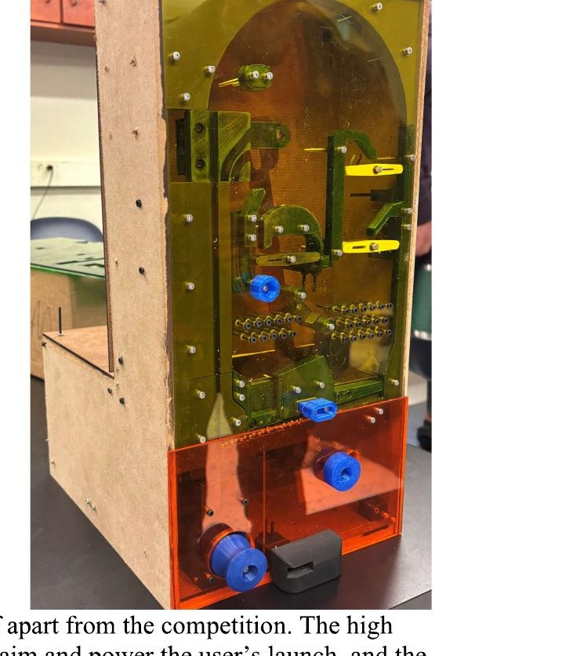

Mechanical Engineering · Auburn University
Rylan
Runske
Product Design · DFM & Manufacturing Engineering
Senior Mechanical Engineering student pursuing a design and manufacturing engineering role. Three internships of progressive responsibility in product design, reverse engineering, and manufacturing process improvement — including ownership of components released to production and hands-on validation testing.
Experience
Nautique Boat Company
Orlando, FL
Scope of Work
- Owned component design projects end-to-end from concept through production release.
- Designed and validated jigs/fixtures used in production assembly.
- Applied reverse engineering and surface modeling in Siemens NX to redesign legacy components for manufacturing.
- Managed CAD data and revision control through PDM to support design reviews and production handoff.
- Conducted water (field) testing for production validation, producing formal engineering test reports.
Roswell Marine
Rockledge, FL
Scope of Work
- Analyzed production workflows across manufacturing departments to identify inefficiencies and implemented lean manufacturing solutions.
- Implemented 5S standards and established a Kanban system in the Blend Department, balancing production load between Blend and Waterjet propulsion assembly lines.
- Coordinated across departments to implement lean manufacturing systems.
Roswell Marine
Rockledge, FL
Scope of Work
- Designed and modeled original components in SolidWorks to support new product development.
- Built and tested prototypes through bench and shake table testing.
Roswell Marine
Rockledge, FL
Scope of Work
- Built speakers, amplifier boards, towers, wiring harnesses, and components on the production line, consistently meeting daily and weekly output quotas across three production seasons.
- Performed visual inspection and functional testing of speakers and amplifiers, identifying and flagging non-conforming units before production release.
Projects
Furuta Pendulum — Modeling, Balance & Swing-Up Control
Derived the full nonlinear dynamics of a rotary (Furuta) inverted pendulum from Lagrangian mechanics, validated the model against the physical plant, then designed and hardware-tested a state-feedback balance controller, a cascade controller for arm-position tracking, and a bang-bang swing-up controller that hands off to balance mode automatically.
Team — Ricardo Lizardi · Rylan Runske · Mitchell Sevy · Alan Stevenson
Step 1 — Modeling
- Derived nonlinear equations of motion for the two-DOF system (arm angle φ, pendulum angle θ) via Euler-Lagrange, then linearized about the unstable upright equilibrium.
- Identified friction and effective arm inertia empirically against the plant's own p-code, correcting the textbook rod-inertia estimate by 2×.
- Validated the linear model against real plant response: 7.7° RMS pendulum error under a 1V step input.
Step 2 — Balance Controller
- Designed a state-feedback regulator via pole placement to stabilize the pendulum upright, targeting settle time < 0.5s, overshoot < 5%, and peak voltage < 10V.
- Linear model met spec: 0.43s settle time, 2.46% overshoot, 5.15V peak.
Step 3 — Real-Hardware Retuning
- The linear-model gains oscillated badly on the real plant (measured overshoot ~10× the prediction), so poles were re-placed with more conservative damping.
- Final gains passed all specs on hardware: 0.442s settle time, 0% overshoot, 3.03V peak.
Step 4 — Cascade Tracking + Swing-Up
- Built a two-loop cascade controller (fast inner loop balances pendulum tilt, slow outer loop commands that tilt to move the arm) to track a nonzero arm-position reference — achieved 1° steady-state arm error tracking to 30°.
- Implemented a hysteretic bang-bang swing-up controller to pump energy into the pendulum from hanging-down, with automatic handoff to the cascade balance controller once near upright (handoff at 3.86s in testing).
Rankine Cycle Optimization — 700 MW Coal Power Plant
Modeled the Rankine cycle of a 700 MW unit at the James H. Miller Electric Generator Plant and evaluated two feasible retrofit options — a lower reheat pressure and an open feedwater heater — against the base cycle on efficiency, cost, and emissions, then used a weighted decision matrix to recommend the strongest overall option.
Team — Moises Munoz Paredes · Keaton Cornett · Braden Miceli · Rylan Runske
Base Plant
- Modeled the reference plant as a single-reheat Rankine cycle (2400 psi boiler, 800 psi reheat) using enthalpy states from steam tables, establishing baseline efficiency (33.63%), mass flow rate, and heat rejected for comparison.
Design 1 — Lower Reheat Pressure
- Reduced reheat pressure to 600 psi (25% of boiler pressure, per literature guidance) to isolate its effect on cycle performance.
- Result: efficiency +0.213%, essentially free to implement, but only a marginal efficiency gain.
Design 2 — Open Feedwater Heater
- Added an open feedwater heater at 200 psi to preheat feedwater before the boiler, re-deriving the cycle's efficiency and energy-balance equations for the added extraction/mixing stages.
- Result: efficiency +2.65% (to 34.52%), mass flow rate stayed within the 15% piping constraint, and heat rejected to the river dropped 3.9% — but required ~$225,000 in new equipment and labor versus ~$300 for the reheat-pressure change.
Cost, Emissions & Decision Matrix
- Converted efficiency gains to coal savings and daily fuel cost, then to CO₂ emissions, for both design options.
- Weighted a decision matrix (cost 40%, efficiency 40%, environmental effect 20%) across all three configurations; the open feedwater heater scored highest overall (3.2 vs. 3.0 and 2.6) despite its higher upfront cost, on the strength of its efficiency and emissions gains.
Programmable Air-to-Land Cruise Missile Sensor System
Selected and specified an onboard sensor suite for an inertial navigation and guidance system, covering the theory of operation, technical specifications, signal conditioning, and system-level integration of each sensor with the flight computer.
Team "War Damn Warheads" — Jay Bowler · Ricardo Lizardi · Rylan Runske · Payton Wildman · James Downs
Gyroscope & Accelerometer — ADIS16470 IMU
- Specified the triaxial MEMS gyroscope (Coriolis-effect sensing, ±2000°/sec range, 8°/hr bias stability) and accelerometer (±40g range, 13 µg bias stability) for attitude and velocity/position estimation via integration.
- Addressed vibration rectification error and mounting near the vehicle's center of gravity to minimize drift.
Radar Altimeter — Garmin GRA 5500
- Specified a frequency-modulated continuous-wave radar altimeter for terrain-relative altitude, immune to the atmospheric-pressure errors of a barometric altimeter.
- Planned digital interfacing with the flight computer for altitude-hold corrective pitch commands, and filtering for low-altitude signal-to-noise degradation.
Doppler Radar Velocity Sensor — OmniPreSense OPS243-A
- Specified a 24 GHz continuous-wave Doppler sensor for direct, non-contact ground-speed measurement, derived the Doppler-shift-to-velocity relationship, and accounted for the mounting angle correction needed against the true velocity vector.
System Integration
- Defined the flight computer as the central hub, communicating with the IMU over SPI, the Doppler sensor over UART, and receiving digital altitude data from the radar altimeter, running navigation/control at a 50–200 Hz update rate.
Mechanical Pachinko Machine — No-Electronics Design Challenge

Finished Device
Designed and built a fully mechanical pachinko-style game — no electronics allowed — that launches, scores, and resets a continuous cycle of steel balls through a playfield of static and dynamic obstacles. Took the project from a product design specification and morphological matrix through five competing playfield concepts, a weighted decision matrix, an FMEA on the launcher mechanism, and hands-on fabrication.
Team 91 — Daniel Marie · Phillip Retzer · Rylan Runske · McGuire Scivally · Mitchell Sevy
Requirements & Concept Generation
- Set engineering requirements/limits from the challenge rules — 20 steel balls in continuous circulation, ≤5-minute reset on a single mechanical input, size and weight limits, and no electronics, adhesives, bands, or threading allowed in the build.
- Used a morphological matrix to break the machine into core functions (dose ball, launch ball, interact with obstacles, update score, capture balls, reset) and generated independent playfield concepts, one per team member, evaluated against a shared selection chart.
Design Selection
- Narrowed five candidate playfields to three finalists using a pass/fail selection chart on realism, cost, and safety, then scored the finalists in a weighted decision matrix (launcher 30%, static obstacles 20%, dynamic obstacles 20%, jackpot 10%, scoring 20%).
- Selected the highest-scoring concept — a peg-and-roller playfield with a jackpot button — for its strong, repeatable launcher and dense static-obstacle field.
Reliability — FMEA
- Ran a failure modes and effects analysis on the launcher and structure, identifying gear shearing as the highest-severity failure mode and designing the gear teeth and print orientation specifically to keep its risk priority number low.
- Addressed lower-severity risks (spring wear, launcher jams, bolt shearing) with tighter tolerances and printed/mechanical safeguards rather than added parts.
Fabrication
- Built the frame from MDF (laser-cut and band-sawed, drill-pressed and countersunk for clean fastening), the playfield obstacles from 3D-printed PLA, and a small aluminum counterweight (waterjet-cut) to correct front-heavy balance — assembled in layers with M3 hardware throughout.
- Used transparent acrylic for the front and rear playfield covers, chosen for visibility into the game and clean laser-cut tolerances.
Skills
Design & Analysis
- SolidWorks (CAD / Surfacing / Sheet Metal / FEA)
- Siemens NX — Surface Modeling
- Reverse Engineering
- Design for Manufacturing (DFM)
- Tolerance Stack-Up
- GD&T
- PDM
Manufacturing & Process
- Lean Manufacturing
- Kanban
- Kaizen
- 5S
- Process Engineering
- Production Support
- Additive Manufacturing
Test & Validation
- Prototype Build & Test
- Bench Testing
- Vibration (Shake Table) Testing
- Environmental / Field Testing
- Test Reporting
Fabrication
- MIG / TIG Welding
- Machining
- Electrical Wiring
- Forklift Operation
Engineering Fundamentals
- Thermodynamics
- Fluid Mechanics
- Mechanics of Materials
- Statics & Dynamics
- Systems Dynamics / Controls
- MATLAB
Leadership & Athletics
Contact
Senior Mechanical Engineering student at Auburn University, graduating May 2027. Open to design and manufacturing engineering roles.